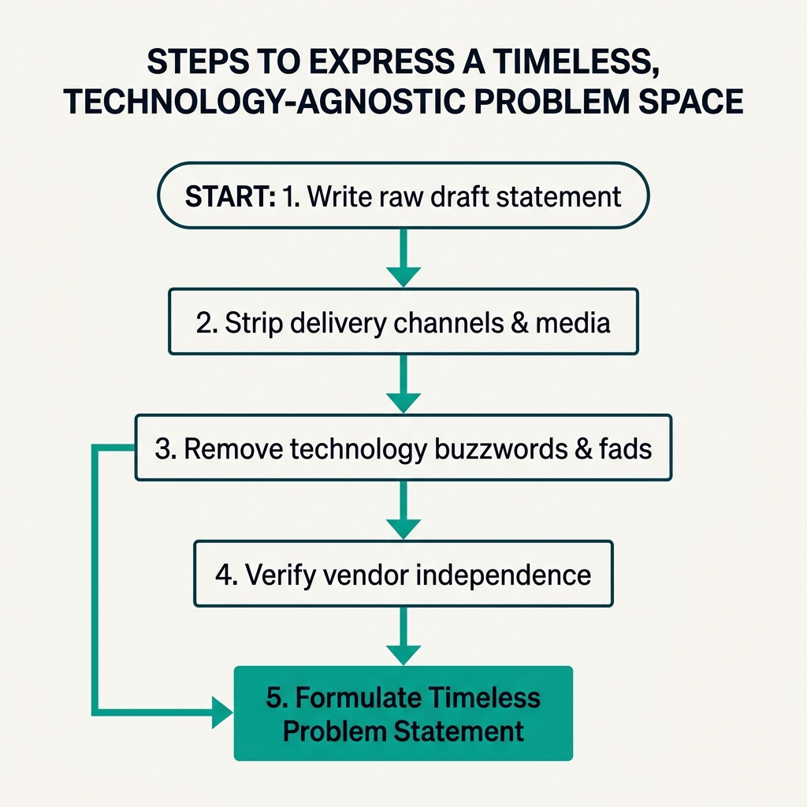

Your goal
Acknowledge technology changes and delivery shift warnings, strip transient tool names from requirements statements, and formulate a timeless, technology-agnostic problem statement.
Lecture overview
When defining your product's problem space, it is critical to separate the timeless customer need from the transient technology solution. This lecture examines how marrying a specific piece of technology or delivery medium can bankrupt a company, using the historic rise and fall of Blockbuster as a warning.
Central argument
A product's opportunity space must be defined independently of technology, management fads, or specific partners. When companies define their business by the delivery medium (as Blockbuster did with VHS/DVD physical retail stores), they become vulnerable to disruption when technology moves on. To survive long-term, Product Managers must abstract their problem statements to focus on timeless human needs (such as convenient home video access), allowing the product's implementation to evolve as new technologies emerge.
1. The Blockbuster vs. Netflix Case Study
Blockbuster owned 9,000 stores at its peak, earning $800M in late fees. A decade later, it was bankrupt with $900M debt. Why? Because they married DVDs and VHS physical stores. Netflix focused on the timeless problem of home movie access, allowing them to shift from mail to streaming.
2. Guidelines for Timeless Problem Statements
Follow three core rules:
- Do not tie statements to specific technology media (DVD vs. Stream).
- Do not tie to temporary management fads or buzzwords.
- Do not tie to single infrastructure vendor partners.
Practical Product Management example
Situation
A PM is working for a startup that provides medical transcription software. The original problem statement in their repository was: "Medical practitioners struggle to type handwritten patient notes into local hospital database desktop systems." The engineering team has optimized the interface for desktop keyboard input. However, hospitals are starting to adopt tablet computers and mobile charting apps, and physicians are demanding voice-to-text systems.
Decision
The PM realizes the problem statement is technology-locked (typing, local hospital databases, desktop systems). They rewrite the problem statement: "Medical practitioners experience high administrative overhead when documenting patient encounters during clinical rounds." They redirect engineering bandwidth away from desktop keyboard shortcuts to build a cloud-based API that takes audio inputs and converts them into structured medical records.
Reasoning
By reframing the problem from "typing on desktops" to "documenting patient encounters during rounds," the PM abstracts away the input hardware and storage location. Documenting encounters is the timeless user need; whether they type on a desktop, tap on a tablet, or speak to a microphone are merely transient implementation details.
Consequence
When the hospital clients shift from desktop workstations to mobile tablets, the startup's cloud API integrates into the new tablet apps. The startup retains 95% of its enterprise contracts, whereas competitors who were locked into desktop local installations lose their market share.
Transferable lesson
Define your product by the user's objective (documenting an encounter), not the hardware device or input method they currently use (typing on desktops). Devices change; objectives remain.
Common misunderstandings
"A technology-agnostic statement is too vague to guide developers"
Correction: A timeless statement does not replace specific technical requirements during a sprint. The engineering team still builds specific features using modern tech stacks. However, the product strategy remains timeless, ensuring that when the tech stack shifts (e.g., from server-rendered HTML to client-side single-page apps), the team understands why they are rebuilding the feature.
"We should ignore emerging technology changes until they are mature"
Correction: Blockbuster ignored streaming because it was initially low resolution and slow. Ignoring technology changes is a fatal strategy. A timeless problem statement enables you to evaluate new technologies objectively: Does this new method (streaming) solve our timeless problem (video access) better than our current method (DVD retail)? If yes, you must pivot.
"If our current partner is stable, we can build them into our core problem definition"
Correction: Even major infrastructure partners (e.g., Salesforce, Google Maps) can change their API terms, pricing, or product focus. If your problem statement is "Help sales teams sync data with Salesforce," you are vulnerable. Frame it as "Help sales teams sync data with CRM databases," ensuring you can swap vendors if terms become unfavorable.
Key concepts and definitions
- Technology-Agnostic: Framing requirements and strategies around user objectives rather than specific hardware, software, or media.
- Delivery Medium: The physical or digital channel used to distribute a solution (e.g., DVD stores, mail envelopes, cloud streaming platforms).
- Late Fee Paradox: A business model flaw where company revenue relies on customer friction, creating a high incentive for competitor disruption.
- Timeless Need: A human or business objective (e.g., transportation, communication) that remains constant regardless of technology changes.
- Tool Lock-In: An architectural or strategic mistake where a company's product is tightly coupled to a single vendor or framework.
Key takeaways
- Express your problem space in a timeless and technology-agnostic way to prevent technology hostage situations.
- Blockbuster collapsed because it defined its business by a transient delivery medium (VHS/DVD retail stores).
- Netflix succeeded because it focused on the timeless customer need of convenient movie access.
- Do not marry a piece of technology, a temporary management fad, or a single partner company.
- A timeless statement allows your product implementation to evolve as new technologies emerge.
- Focus on the user's core objective (e.g., transferring value) rather than their current task (e.g., writing paper checks).
- Timeless strategies guide long-term roadmaps, while sprint requirements define short-term code details.
- Evaluate new technologies by how much better they solve the timeless customer need than current methods.
Visual summary

28-visual-summary.png
How to express timeless statement flow. Flowchart showing: write raw draft statement, strip delivery channels, remove tech fads, check vendor independence, and formulate timeless statement.
One-minute review
Separate Need from Medium: Define what the customer is trying to accomplish, not the physical or digital format they use. Study Blockbuster: Avoid business models built on customer friction (like late fees) and delivery channels that can be virtualized. Keep it Agnostic: Strip out specific hardware, coding languages, fads, or vendor names from your long-term product strategy.
Interactive Practice
Examine how different industries reframe their technology-locked statements to remain timeless. Click the tabs below to explore.
Video Rental Reframing
Technology-Locked: "Help users rent VHS tapes and DVDs from convenient local retail stores."
Technology-Agnostic: "Provide users with convenient, friction-free access to home video entertainment."
Strategic Benefit: Enables transition from physical tape storefronts to mail envelopes to digital video streaming networks.
Music Reframing
Technology-Locked: "Manufacture and distribute compact discs (CDs) to music retail outlets."
Technology-Agnostic: "Provide music listeners with instant, high-quality access to global audio libraries."
Strategic Benefit: Protects the business model when distribution shifts from physical plastic discs to MP3 downloads to cloud-based streaming memberships.
Logistics Reframing
Technology-Locked: "Build a dispatch system to call taxi cabs via telephone operators."
Technology-Agnostic: "Help passengers get from point A to point B quickly, safely, and reliably."
Strategic Benefit: Prepares the service framework to evolve from call centers to GPS smartphone apps to autonomous vehicle routing algorithms.
Finance Reframing
Technology-Locked: "Help customers write paper checks and deposit them at physical bank branches."
Technology-Agnostic: "Help account owners transfer monetary value securely and immediately."
Strategic Benefit: Abstracting value transfer ensures the bank builds online web transfers, mobile wallet matching, and instant payment networks.
Apply the framing rules. Review the strategic scenarios below and select the correct technology-agnostic option.